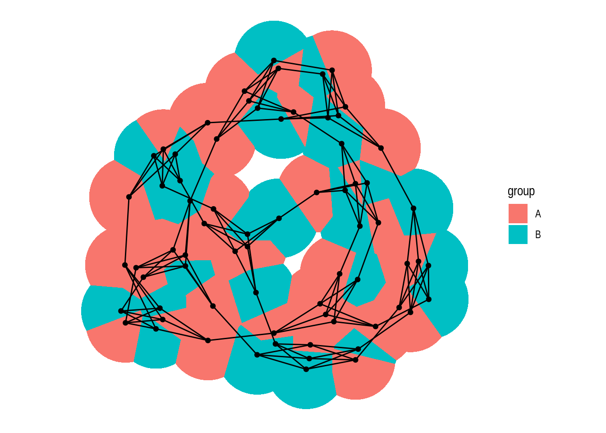

set.seed(123) # for reproducibility
# Load required packages
library(here)
library(igraph)
library(igraphdata)
library(tidyverse)
library(tidygraph)
library(ggraph)
library(patchwork)
set_graph_style(plot_margin = margin(1,1,1,1))4 Network visualization
In this lesson, you will learn how to visualize networks using the ggplot plotting system. At the end of this lesson, you will be able to:
- convert
igraphobjects to their tidy representation; - identify which network layout to use for each kind of network data;
- modify aesthetic properties of nodes and edges;
- enhance visualizations for large graphs.
Let’s start by loading the packages we will use.
4.1 Tidy graph representations
To create plots using the ggplot plotting system, one needs to have tidy data in the long format (as in the tidyverse nomenclature), which is summarized below.

To convert igraph objects to a tidy data frame, you can use the tidygraph package, which offers a tidy API for graph manipulation. In particular, we are mostly interested in the function as_tbl_graph, which converts igraph objects to tbl_graph objects containing nodes and edges (with attributes, if any) in a tidy format. Let’s demonstrate it with the karate network we’ve been using in previous chapters.
# Get karate club network
g <- make_graph("Zachary")
# Convert `igraph` object to tidy `tbl_graph`
graph_df <- as_tbl_graph(g)
graph_df# A tbl_graph: 34 nodes and 78 edges
#
# An undirected simple graph with 1 component
#
# Node Data: 34 × 0 (active)
#
# Edge Data: 78 × 2
from to
<int> <int>
1 1 2
2 1 3
3 1 4
# ℹ 75 more rowsWe can see that this tbl_graph object contains only edge information, because the original igraph object does not contain node attributes. For example, let’s now do the same with the macaque network data from the igraphdata package.
data(macaque)
# Convert `igraph` object to tidy `tbl_graph`
macaque_df <- as_tbl_graph(macaque)
macaque_df# A tbl_graph: 45 nodes and 463 edges
#
# A directed simple graph with 1 component
#
# Node Data: 45 × 2 (active)
shape name
<chr> <chr>
1 square V1
2 square V2
3 square V3
4 square V3A
5 square V4
6 square V4t
7 square VOT
8 square VP
9 square MT
10 square MSTd/p
# ℹ 35 more rows
#
# Edge Data: 463 × 2
from to
<int> <int>
1 1 2
2 1 3
3 1 4
# ℹ 460 more rows4.2 Plotting networks
The ggraph package is arguably one of the most popular R packages to visualize networks using the ggplot system. This package was designed to interoperate with tidygraph, and it can produce network visualizations from tbl_graph objects in many ways. In the sections below, we will explore the building blocks of plots produced with ggraph.
4.2.1 Layouts
When plotting networks, a very important step consists in choosing an appropriate layout to use. Layouts algorithms are algorithms that take a graph structure and return the x and y coordinates of the nodes.
To start, let’s create a basic network plot using the highschool data set, which contains friendship relationships among high school boys in 1957 and 1958. We will use the default layout.
# Create `tbl_graph` object
gdf <- as_tbl_graph(highschool)
ggraph(gdf) +
geom_edge_link(aes(color = factor(year))) +
geom_node_point()
By default, the function ggraph() uses the “stress” layout, a slightly modified version of the stress-minimization algorithm Kamada-Kawai. However, ggraph() offers multiple layout algorithms, including internal igraph layout algorithms (available in igraph’s functions layout_with_*()). You can explore all available layouts by running ?create_layout().
Different layout algorithms can be specified in the layout argument of the ggraph() function. For example, let’s recreate the network plot above, but now with the ‘kk’ layout (internal igraph layout).
ggraph(gdf, layout = "kk") +
geom_edge_link(aes(color = factor(year))) +
geom_node_point()
If you look at the documentation of the function igraph::layout_with_kk(), you will notice that this layout algorithm can take additional parameters (as do most layout algorithms). These additional parameters can be passed to ggraph() as well.
ggraph(gdf, layout = "kk", maxiter = 100) +
geom_edge_link(aes(color = factor(year))) +
geom_node_point()Alternatively, you can also use the function create_layout() to get a data frame of x and y coordinates for nodes based on a specific layout algorithm. Under the hood, this is what ggraph() does.
# Get a data frame of x and y coordinates based on layout 'kk'
coords <- create_layout(gdf, layout = "kk")
head(coords)# A tibble: 6 × 5
x y .ggraph.orig_index circular .ggraph.index
<dbl> <dbl> <int> <lgl> <int>
1 2.34 1.34 1 FALSE 1
2 2.72 1.84 2 FALSE 2
3 3.32 1.31 3 FALSE 3
4 -2.54 0.884 4 FALSE 4
5 -1.76 1.95 5 FALSE 5
6 -0.357 3.33 6 FALSE 6# Plot network using the data frame of coordinates
ggraph(coords) +
geom_edge_link(aes(color = factor(year))) +
geom_node_point()ggraph includes all layouts in the packages igraph and graphlayouts, as well as specialized layouts that are only available in ggraph. We will explore some layout options in the subsections below.
Practice
- Using the
macaquenetwork, create a network plot that matches the following requirements:
- Layout: ‘kk’
- Edge color: ‘gray80’
- Node color and shape should be mapped to node attribute shape.
Hint: mapping variables to plot aesthetics works just like in any other plot created with the ggplot system.
- Recreate the same plot as above, but now using the layouts ‘graphopt’, ‘circle’, and ‘fr’.
4.2.1.1 Circular layouts
Some relationships in network data are better visualized if represented in a circular fashion You can create circular representations by setting circular = TRUE in ggraph(). To demonstrate, let’s create the same kind of network plot, an arc diagram, in standard and circular layout.
# 1) Arc diagram - standard representation
p1 <- ggraph(gdf, layout = 'linear') +
geom_edge_arc(aes(colour = factor(year)))
# 2) Chord diagram - circular representation
p2 <- ggraph(gdf, layout = 'linear', circular = TRUE) +
geom_edge_arc(aes(colour = factor(year)))
p1 / p2You may have noticed that the network layout (and everything else) remains the same in both plots, and the only difference is that the second plot was created by representing the layout in a circular fashion. Note also that representing a layout circularly often changes the “name” of the visualization (i.e., how people often refer to it). In this example, you can clearly see that a so-called chord diagram is simply an arc diagram represented circularly.
Another example of how circular representations can change a visualization’s “name” is the distinction between icicle plots and sunburst plots, both of which represent hierarchical data, but latter method does so in a circular fashion. To demonstrate, let’s create both plots using the flare data set, which contains a graph describing the class hierarchy for the Flare ActionScript visualization library.
# Create `tbl_graph` object from flare data set
fg <- tbl_graph(flare$vertices, flare$edges)
# 1) Icicle plot - standard representation
p1 <- ggraph(fg, "partition") +
geom_node_tile(aes(fill = depth), linewidth = 0.2)
# 1) Sunburst plot - standard representation
p2 <- ggraph(fg, "partition", circular = TRUE) +
geom_node_arc_bar(aes(fill = depth), linewidth = 0.2) +
coord_fixed()
p1 + p24.2.1.2 Node-edge layouts
When people think about network visualizations, node-edge diagrams are arguably the first picture that comes to their mind. igraph offers many layout algorithms to create such plots, each of them optimized for a different scenario. Thus, there is no such thing as “the best layout algorithm”, and you should try different algorithms for your network to see what looks better.
To demonstrate some of these family of algorithms and how you can explore how the plots they create look like, we will store layout names in a vector and loop through them, passing them as input to the layout argument of ggraph() in each iteration. Recall that this is possible because different layouts can be used by simply changing the input to the layout argument.
# Define layout names we want to try
layouts <- c("stress", "fr", "lgl", "graphopt")
# Create the same plot, but changing input to `layout` argument
plots <- lapply(layouts, function(x) {
p <- ggraph(highschool, layout = x) +
geom_edge_link(aes(colour = factor(year)), show.legend = FALSE) +
geom_node_point() +
labs(title = paste0('Layout: ', x))
return(p)
})
wrap_plots(plots, nrow = 2)4.2.1.3 Hive plots
Hive plots have become increasingly popular to visualize large networks, because they display nodes on radially distributed linear axes, each axis representing a level of a node attribute. For example, using the highschool data set, let’s create a variable friends indicating whether each person has few, medium, or many friends.
# Add degree information to highschool network
hs_graph <- as_tbl_graph(highschool) |>
mutate(degree = centrality_degree(mode = "in")) |>
mutate(
friends = case_when(
degree <5 ~ "few",
degree >=15 ~ "many",
TRUE ~ "medium"
)
)
hs_graph# A tbl_graph: 70 nodes and 506 edges
#
# A directed multigraph with 1 component
#
# Node Data: 70 × 2 (active)
degree friends
<dbl> <chr>
1 2 few
2 0 few
3 0 few
4 4 few
5 5 medium
6 2 few
7 2 few
8 3 few
9 4 few
10 4 few
# ℹ 60 more rows
#
# Edge Data: 506 × 3
from to year
<int> <int> <dbl>
1 1 13 1957
2 1 14 1957
3 1 20 1957
# ℹ 503 more rowsNow, we can create a hive plot showing each level of the friends variable (few, many, and medium) as an axis, with nodes mapped to each axis sorted by their degrees.
# Create a hive plot
ggraph(hs_graph, "hive", axis = friends, sort.by = degree) +
geom_edge_hive(aes(colour = factor(year))) +
geom_axis_hive(aes(colour = friends), linewidth = 2, label = FALSE) +
coord_fixed()4.2.1.4 Focal layouts
Focal layouts are used to display all nodes relative to a central node (or group of nodes). The focal nodes can be, for example, nodes with high degree, or a node you want to highlight.
ggraph(highschool, "focus", focus = node_is_center()) +
ggforce::geom_circle(
data = data.frame(r = 1:5),
aes(x0 = 0, y0 = 0, r = r),
colour = "grey"
) +
geom_edge_link() +
geom_node_point() +
coord_fixed()4.2.1.5 Hierarhical layouts
Hierarchical layouts are optimized to represent tree-like data, and ggraph offers several algorithms for such data, including ‘ciclepack’, ‘treemap’, ‘cactustree’, ‘tree’, and ‘dendrogram’. Here, we will focus on the most commonly used ones using the flare data set.
The ‘circlepack’ layout, like some other hierarchical layouts, can be used to display relations with enclosure and positions only, or with edges too. Let’s demonstrate both ways.
# Create `tbl_graph` object
graph <- tbl_graph(flare$vertices, flare$edges)
# 1) Only enclosure and positions
p1 <- ggraph(graph, "circlepack", weight = size) +
geom_node_circle(aes(fill = depth), size = 0.25, n = 50) +
coord_fixed()
# 2) Include edges
p2 <- ggraph(graph, "circlepack", weight = size) +
geom_edge_link() +
geom_node_point(aes(colour = depth)) +
coord_fixed()
p1 / p2The same data can also be represented as a tree using the ‘tree’ layout.
ggraph(graph, "tree") +
geom_edge_diagonal()In a tree representation, when node heights are important (with nested relations, as in hclust objects), you would probably prefer to use a ‘dendrogram’ layout instead. To demonstrate this, let’s create a dendrogram from the iris data set.
# Create `hclust` object
dendrogram <- hclust(dist(iris[, 1:4]))
ggraph(dendrogram, "dendrogram", height = height) +
geom_edge_elbow()
Practice
For each of the data sets below, choose a suitable layout and plot them.
# Data set 1
ds1 <- hclust(dist(USArrests), "average")
# Data set 2
data(UKfaculty)
ds2 <- UKfaculty4.2.2 Nodes and edges
ggraph offers different node and edge options with the family of functions geom_node_*() and geom_edge_*(). Each function from each family is used for a specific kind of visualization, and below we’re going to explore the main ones.
4.2.2.1 Node options: geom_node_*()
The most common node geom is geom_node_point(), which is used to create classical node-edge diagrams. Let’s take a look at an example below.
g <- as_tbl_graph(highschool)
ggraph(g) +
geom_edge_link(color = "gray70") +
geom_node_point()The function geom_node_voronoi() display nodes as cells from a voronoi tesselation, and it can be useful to show dominance of certain node types.
graph <- create_notable('meredith') |>
mutate(group = sample(c('A', 'B'), n(), TRUE))
ggraph(graph) +
geom_node_voronoi(aes(fill = group), max.radius = 1) +
geom_node_point() +
geom_edge_link() +
coord_fixed()
The function geom_node_tile() is typically used together with layout = 'treemap' and layout = 'partition'. Let’s see some examples.
# Create `tbl_graph` from flare data set
graph <- tbl_graph(flare$vertices, flare$edges)
# 1) Icicle diagram
p1 <- ggraph(graph, layout = 'partition') +
geom_node_tile(aes(y = y, fill = depth))
# 2) Treemap
p2 <- ggraph(graph, layout = 'treemap', weight = size) +
geom_node_tile(aes(fill = depth))
p1 / p2To view all functions in the geom_node_*() family, you can execute ??ggraph::geom_node_.
4.2.2.2 Edge options: geom_edge_*()
As we’ve seen before, the most common edge geom is geom_edge_link(), which simply draws a line between two nodes.
g <- as_tbl_graph(highschool)
ggraph(g) +
geom_edge_link(aes(color = factor(year)))In case there are multiple edges between the same nodes, a better way of representing them would be using the functions geom_edge_fan() and geom_edge_parallel(), as demonstrated below.
# 1) geom_edge_fan() - multi-edges as arcs with different curvature
p1 <- ggraph(g) +
geom_edge_fan(aes(color = factor(year)))
# 2) geom_edge_parallel() - multi-edges as parallel lines
p2 <- ggraph(g) +
geom_edge_parallel(aes(color = factor(year)))
p1 / p2In some cases, arcs are a better way of representing edges, either in a linear or circular representation. Arcs can be created with geom_edge_arc().
# 1) geom_edge_arc(), linear
p1 <- ggraph(g, layout = "linear") +
geom_edge_arc(aes(color = factor(year))) +
coord_fixed()
# 2) geom_edge_arc(), circular
p2 <- ggraph(g, layout = "linear", circular = TRUE) +
geom_edge_arc(aes(color = factor(year))) +
coord_fixed()
p1 / p2Another technique for drawing edges is bundling, which consists in bundling edges that flow in the same direction to avoid clutter. Many bundling algorithms exist, but ggraph offers 3 algorithms: force-directed, edge path, and minimal, available in geoms geom_edge_bundle_force(), geom_edge_bundle_path(), and geom_edge_bundle_minimal(), respectively. Let’s demonstrate each of them.
# Bundling with force-directed algorithm
p1 <- ggraph(g) +
geom_edge_bundle_force()
# Bundling with edge path algorithm
p2 <- ggraph(g) +
geom_edge_bundle_path()
# Bundling with minimal algorithm
p3 <- ggraph(g) +
geom_edge_bundle_minimal()
p1 / p2 / p3To visualize hierarchical data as a dendrogram, you can use geom_edge_elbow() or its smoother alternatives geom_edge_diagonal() and geom_edge_bend().
h <- hclust(dist(iris[, 1:4]))
# Dendrogram, elbow
p1 <- ggraph(h, layout = "dendrogram", height = height) +
geom_edge_elbow()
# Dendrogram, diagonal
p2 <- ggraph(h, layout = "dendrogram", height = height) +
geom_edge_diagonal()
# Dendrogram, bend
p3 <- ggraph(h, layout = "dendrogram", height = height) +
geom_edge_bend()
p1 + p2 + p3Importantly, many edge geoms (including geom_edge_elbow()) can take a strength argument (from 0 to 1; default = 1) that indicates how much the line deviates from a straight line. This way, you can plot a dendrogram with geom_edge_elbow() that looks similar to one created with geom_edge_diagonal().
ggraph(h, layout = "dendrogram", height = height) +
geom_edge_elbow(strength = 0.5)Finally, you can also decorate your edges with arrows and labels. To add arrows, you will use the arrow() function in the arrow argument of the edge geom. It’s also important to specify a cap in argument end_cap so that the arrows have some distance from terminal nodes. Here is an example:
# Create 'bull' graph with {igraph} and add edge attributes
bull <- make_graph("Bull")
E(bull)$type <- sample(c("friend", "foe"), ecount(bull), TRUE)
gbull <- as_tbl_graph(bull)
# Plot graph with edges
ggraph(gbull, layout = 'graphopt') +
geom_edge_link(
arrow = arrow(length = unit(4, 'mm')),
end_cap = circle(3, 'mm')
) +
geom_node_point(size = 5)To include edge labels in this same graph, you’d do:
ggraph(gbull, layout = 'graphopt') +
geom_edge_link(
aes(label = type),
angle_calc = "along",
label_dodge = unit(2.5, "mm"),
arrow = arrow(length = unit(4, 'mm')),
end_cap = circle(3, 'mm')
) +
geom_node_point(size = 5)
Practice
In the plot above, with edges having labels and arrows, what happens if you remove the arguments angle_calc = "along" and label_dodge = unit(2.5, "mm")? Based on what you observe, what do these arguments control?
4.3 Visualizing large networks
In real-world network data analyses, we often work with large networks. While visualizing very large networks is generally not recommended (because it’s hard to extract meaningful information from such visualizations), sometimes they can be useful to explore group structure in graphs. In this final section, we will use the Game of Thrones network we explored in previous chapters to demonstrate best practices to get the most out of network visualizations, especially for large networks.
Let’s start by loading the data set and creating a simple node-edge diagram (or hairball) with default parameters.
# Load data set
got <- readRDS(here("data", "got.rds"))
# Get `tbl_graph` and plot it
g <- as_tbl_graph(got)
p1 <- ggraph(g) +
geom_edge_link() +
geom_node_point()
p1This is a relatively large network (N = 107 nodes), and a simple visualization with default parameters does not work so well. We can hardly extract any useful information from it. The first and very important thing you’d want to change in this plot would be node size and colors. It is considered standard practice to color nodes based on their shared properties (such as communities inferred with community detection algorithms), and to give them variables sizes based on their degree. Let’s do this.
# Add `degree` and `cluster` node attributes
V(got)$cluster <- cluster_louvain(got) |> membership() |> as.character()
V(got)$degree <- degree(got)
g <- as_tbl_graph(got)
p2 <- ggraph(g) +
geom_edge_link() +
geom_node_point(aes(size = degree, fill = cluster), shape = 21)
p2This looks much better, right? But we can still improve it further. We can see that a part of the graph is densely connected, which makes it a bit cluttered. To make it look better, we can reduce line widths, and add a bit of transparency to the edges.
p3 <- ggraph(g) +
geom_edge_link(linewidth = 0.2, alpha = 0.6) +
geom_node_point(aes(size = degree, fill = cluster), shape = 21)
p3Lastly, we can also use a better color palette.
p4 <- ggraph(g) +
geom_edge_link(linewidth = 0.2, alpha = 0.6) +
geom_node_point(aes(size = degree, fill = cluster), shape = 21) +
scale_fill_brewer(palette = "Set1")
p4By simply changing the aesthetics of nodes and edges, this is how we made out plot look better:
Besides changing node and edge aesthetics, playing with different layouts is also very important when visualizing large networks. The default layouts in ggraph (‘stress’ for most networks, and ‘sparse_stress’ for very large networks) are excellent layouts that generally work well, but you might want to test other approaches for large networks.
A common approach consists in using focal layouts to emphasize certain nodes. This can be done using layout = "focus" (to focus on a central node) or layout = "centrality" (similar to ‘focus’, but using a centrality measure).
# 'focus' layout
p1 <- ggraph(g, layout = "focus", focus = node_is_center()) +
geom_edge_link(linewidth = 0.2, alpha = 0.6) +
geom_node_point(aes(size = degree, fill = cluster), shape = 21) +
scale_fill_brewer(palette = "Set1") +
coord_fixed() +
theme(legend.position = "none")
# 'centrality' layout (degree as centrality measure)
p2 <- ggraph(g, layout = "centrality", centrality = centrality_degree()) +
geom_edge_link(linewidth = 0.2, alpha = 0.6) +
geom_node_point(aes(size = degree, fill = cluster), shape = 21) +
scale_fill_brewer(palette = "Set1") +
coord_fixed() +
theme(legend.position = "none")
p1 + p2A big advantage of these layouts, especially the ‘centrality’ layout, is that it’s easier to see node labels, so we can quickly see which nodes are the most important ones in the network. We can add node labels with geom_node_text.
# Add text to label nodes
p2 + geom_node_text(aes(label = name, size = degree), repel = TRUE)Finally, the ‘backbone’ layout can help emphasize hidden group structures in a graph, and its popularity has increased a lot, especially when visualizing large graphs.
ggraph(g, layout = "backbone", keep = 0.4) +
geom_edge_link(linewidth = 0.2, alpha = 0.6) +
geom_node_point(aes(size = degree, fill = cluster), shape = 21) +
scale_fill_brewer(palette = "Set1")
As stated before, it is generally recommended to test multiple layout algorithms, as each of them is optimized for a specific purpose.
Challenge
The yeast network is a very large network containing 2617 nodes. Use the techniques you learned to visualize this network in an efficient way. Test at least two layouts.
You can load the data set using the code below.
data(yeast)Hint: this network contains a node attribute named Class that could be used to group nodes.
Session information
This chapter was created under the following conditions:
─ Session info ───────────────────────────────────────────────────────────────
setting value
version R version 4.3.2 (2023-10-31)
os Ubuntu 22.04.3 LTS
system x86_64, linux-gnu
ui X11
language (EN)
collate en_US.UTF-8
ctype en_US.UTF-8
tz Europe/Brussels
date 2024-04-19
pandoc 3.1.1 @ /usr/lib/rstudio/resources/app/bin/quarto/bin/tools/ (via rmarkdown)
─ Packages ───────────────────────────────────────────────────────────────────
package * version date (UTC) lib source
BiocManager 1.30.22 2023-08-08 [1] CRAN (R 4.3.2)
BiocStyle 2.30.0 2023-10-24 [1] Bioconductor
cachem 1.0.8 2023-05-01 [1] CRAN (R 4.3.2)
cli 3.6.2 2023-12-11 [1] CRAN (R 4.3.2)
colorspace 2.1-0 2023-01-23 [1] CRAN (R 4.3.2)
deldir 2.0-4 2024-02-28 [1] CRAN (R 4.3.2)
digest 0.6.34 2024-01-11 [1] CRAN (R 4.3.2)
dplyr * 1.1.4 2023-11-17 [1] CRAN (R 4.3.2)
evaluate 0.23 2023-11-01 [1] CRAN (R 4.3.2)
fansi 1.0.6 2023-12-08 [1] CRAN (R 4.3.2)
farver 2.1.1 2022-07-06 [1] CRAN (R 4.3.2)
fastmap 1.1.1 2023-02-24 [1] CRAN (R 4.3.2)
forcats * 1.0.0 2023-01-29 [1] CRAN (R 4.3.2)
generics 0.1.3 2022-07-05 [1] CRAN (R 4.3.2)
ggforce 0.4.1 2022-10-04 [1] CRAN (R 4.3.2)
ggplot2 * 3.5.0 2024-02-23 [1] CRAN (R 4.3.2)
ggraph * 2.2.1 2024-03-07 [1] CRAN (R 4.3.2)
ggrepel 0.9.5 2024-01-10 [1] CRAN (R 4.3.2)
glue 1.7.0 2024-01-09 [1] CRAN (R 4.3.2)
graphlayouts 1.1.0 2024-01-19 [1] CRAN (R 4.3.2)
gridExtra 2.3 2017-09-09 [1] CRAN (R 4.3.2)
gtable 0.3.4 2023-08-21 [1] CRAN (R 4.3.2)
here * 1.0.1 2020-12-13 [1] CRAN (R 4.3.2)
hms 1.1.3 2023-03-21 [1] CRAN (R 4.3.2)
htmltools 0.5.7 2023-11-03 [1] CRAN (R 4.3.2)
htmlwidgets 1.6.4 2023-12-06 [1] CRAN (R 4.3.2)
igraph * 2.0.1.1 2024-01-30 [1] CRAN (R 4.3.2)
igraphdata * 1.0.1 2015-07-13 [1] CRAN (R 4.3.2)
jsonlite 1.8.8 2023-12-04 [1] CRAN (R 4.3.2)
knitr 1.45 2023-10-30 [1] CRAN (R 4.3.2)
labeling 0.4.3 2023-08-29 [1] CRAN (R 4.3.2)
lattice 0.22-5 2023-10-24 [4] CRAN (R 4.3.1)
lifecycle 1.0.4 2023-11-07 [1] CRAN (R 4.3.2)
lubridate * 1.9.3 2023-09-27 [1] CRAN (R 4.3.2)
magrittr 2.0.3 2022-03-30 [1] CRAN (R 4.3.2)
MASS 7.3-60 2023-05-04 [4] CRAN (R 4.3.1)
Matrix 1.6-3 2023-11-14 [4] CRAN (R 4.3.2)
memoise 2.0.1 2021-11-26 [1] CRAN (R 4.3.2)
munsell 0.5.0 2018-06-12 [1] CRAN (R 4.3.2)
oaqc 1.0 2017-11-14 [1] CRAN (R 4.3.2)
patchwork * 1.2.0 2024-01-08 [1] CRAN (R 4.3.2)
pillar 1.9.0 2023-03-22 [1] CRAN (R 4.3.2)
pkgconfig 2.0.3 2019-09-22 [1] CRAN (R 4.3.2)
polyclip 1.10-6 2023-09-27 [1] CRAN (R 4.3.2)
purrr * 1.0.2 2023-08-10 [1] CRAN (R 4.3.2)
R6 2.5.1 2021-08-19 [1] CRAN (R 4.3.2)
RColorBrewer 1.1-3 2022-04-03 [1] CRAN (R 4.3.2)
Rcpp 1.0.12 2024-01-09 [1] CRAN (R 4.3.2)
readr * 2.1.5 2024-01-10 [1] CRAN (R 4.3.2)
rlang 1.1.3 2024-01-10 [1] CRAN (R 4.3.2)
rmarkdown 2.25 2023-09-18 [1] CRAN (R 4.3.2)
rprojroot 2.0.4 2023-11-05 [1] CRAN (R 4.3.2)
rstudioapi 0.15.0 2023-07-07 [1] CRAN (R 4.3.2)
scales 1.3.0 2023-11-28 [1] CRAN (R 4.3.2)
sessioninfo 1.2.2 2021-12-06 [1] CRAN (R 4.3.2)
stringi 1.8.3 2023-12-11 [1] CRAN (R 4.3.2)
stringr * 1.5.1 2023-11-14 [1] CRAN (R 4.3.2)
tibble * 3.2.1 2023-03-20 [1] CRAN (R 4.3.2)
tidygraph * 1.3.1 2024-01-30 [1] CRAN (R 4.3.2)
tidyr * 1.3.1 2024-01-24 [1] CRAN (R 4.3.2)
tidyselect 1.2.0 2022-10-10 [1] CRAN (R 4.3.2)
tidyverse * 2.0.0 2023-02-22 [1] CRAN (R 4.3.2)
timechange 0.3.0 2024-01-18 [1] CRAN (R 4.3.2)
tweenr 2.0.2 2022-09-06 [1] CRAN (R 4.3.2)
tzdb 0.4.0 2023-05-12 [1] CRAN (R 4.3.2)
utf8 1.2.4 2023-10-22 [1] CRAN (R 4.3.2)
vctrs 0.6.5 2023-12-01 [1] CRAN (R 4.3.2)
viridis 0.6.5 2024-01-29 [1] CRAN (R 4.3.2)
viridisLite 0.4.2 2023-05-02 [1] CRAN (R 4.3.2)
withr 3.0.0 2024-01-16 [1] CRAN (R 4.3.2)
xfun 0.42 2024-02-08 [1] CRAN (R 4.3.2)
yaml 2.3.8 2023-12-11 [1] CRAN (R 4.3.2)
[1] /home/faalm/R/x86_64-pc-linux-gnu-library/4.3
[2] /usr/local/lib/R/site-library
[3] /usr/lib/R/site-library
[4] /usr/lib/R/library
──────────────────────────────────────────────────────────────────────────────